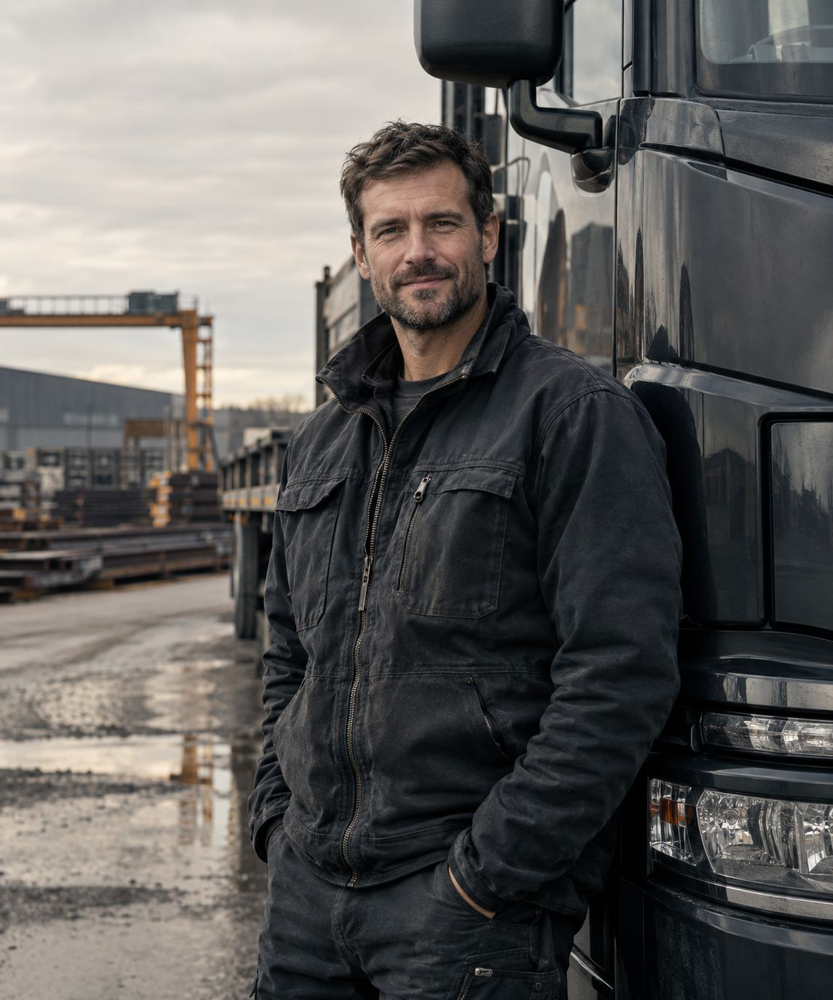

● Commercial automotive recycling
Your service department produces more than repair orders.
01 — Identify
Which operation
are you running?
Every business generates a different material mix. Choose yours and the rest of this page adjusts.
02 — Discover
What's sitting
behind your shop.
Tap each component. These are the materials businesses most often throw in a mixed bin or never count at all.
 Concept image
Concept image
Some of your most overlooked revenue may already be sitting behind your shop.
Not every converter is the same. Not every bin is scrap. The difference shows up when material is separated, counted and collected on a schedule.
03 — Shop Profit Leak Audit
Find the leak in
four taps.
A two-minute assessment of what your operation likely generates and what may be leaving uncounted. You get a result on screen, then decide whether to talk.
Step 1 of 4
What kind of business?
Step 2 of 4
What do you set aside today?
Step 3 of 4
How many service bays?
1 · · · · · · · · · · 20+
Step 4 of 4
How is it handled now?
● Your result
Recovery opportunity
● Received
Jason's team will call you to schedule.
Your material list and photos are attached to your request.
 Concept image
Concept image
04 — How it works
One call. Then it runs on a schedule.
Assess
We walk your material mix with you.
Stage
Simple separation that fits your floor.
Collect
A professional pickup at your timing.
Document
Itemized records of what left.
Repeat
Recurring visits, no chasing.

05 — Professional pickup
Shows up like a vendor, not a scrap run.
Customer references and pickup photography will be added here from active accounts.
06 — Service area
Based in Central Jersey.
Routes run out of South Amboy along the corridors your business already uses. Tap a region.
South Amboy, NJ
Home base at 330 Henry St.
07 — Business intelligence
Read before you sell.
Straight answers for service managers and shop owners. No pricing games.

Stand-in · replace with Jason08 — Ownership
"You'll have my number. If something's off on a pickup, I'm the one you call."